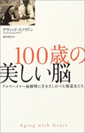
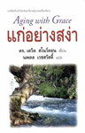
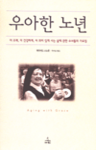
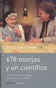
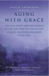
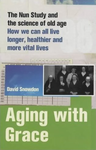
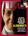

Return to: U of M Home

Nun Study
- Aging with Grace
- School Sisters
- F.A.Q.
- Events / Presentations
- Videos
- Other Info / Links
- Donate
- Contact Us
Research
Home : Book
Aging With Grace
ISBN: 0553380923
Awards
Dr. David Snowdon, author of Aging with Grace, receives 2002 Christopher Award
Excerpt
View an excerpt from Aging with Grace
Purchase
Buy the book online in hard cover or paperback. For non US enlish versions, see below.
Information
- Media coverage
- All media inquiries, please contact us.
Translations
-
English (US)
Aging With Grace, Hard Cover
Bantam Dell -
English (US)
Aging With Grace, Paperback
Bantam Dell -

Japanese (JP)
100歳の美しい脳
A beautiful 100-year-old mind
Hara Shobo -

Thai (TH)
Kae Yang Sa-nga
Aging with Grace
Silkworm Books -

Korean (KR)
Woo-A-Han No-Nyeon
Aging with Grace
ScienceBooks -

Spanish (ES)
678 Monjas y un Cientifico
678 Nuns and a Scientist
Editorial Planeta -

English (GB)
Aging With Grace, paperback
Fourth Estate -

English (GB)
Aging With Grace, hard cover
Fourth Estate -
German (DE)
Lieber alt und gesund
Preferably Old and Healthy
Karl Blessing Verlag -
Dutch (NL)
Gezegende ouderdom
Blessed Old Age
Contact Publishers
National and international media coverage of Aging with Grace
-
The New York Times, May 7, 2001
-
National Public Radio's Fresh Air, May 8, 2001
-

Time magazine, Cover Story, May 14, 2001
-
NBC Today Show, May 14, 2001
-
NBC Nightly News with Tom Brokaw, May 14, 2001
-
USA Today, May 14, 2001
-
The Charlie Rose Show, May 17, 2001
-
People's Pharmacy, June 23, 2001
-
This Is London, August 13, 2001
-
AMWA, Media Review of Aging with Grace, June, 2002